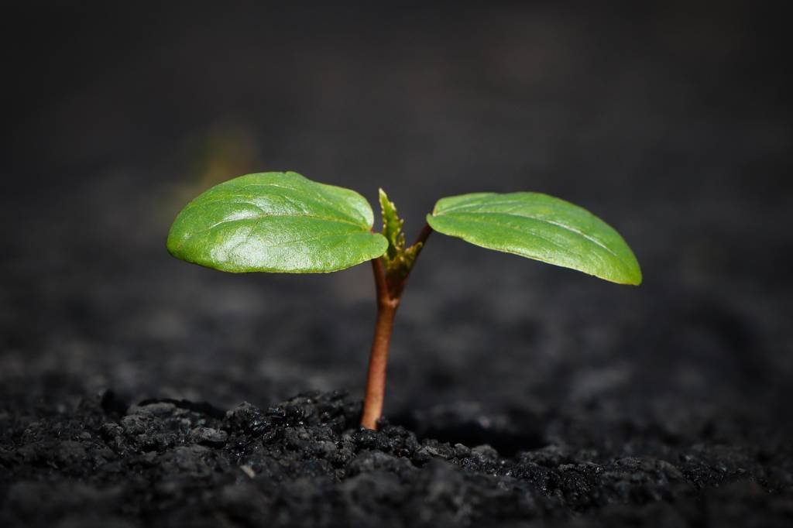

Missão
Democratizar o conhecimento sobre práticas sustentáveis de forma simples, positiva e 100% acessível, incentivando mudanças reais de hábito no cotidiano.
🌱 SOBRE O PROJETO
Somos estudantes da UNICID unidos pela ideia de que informação acessível e prática pode transformar hábitos e proteger o planeta.
O Raízes Sustentáveis nasceu na disciplina de Front-End para Web da Universidade Cidade de São Paulo (UNICID) como resposta direta a problemas cotidianos das cidades brasileiras: o descarte incorreto de resíduos sólidos, o desperdício de água e energia e a falta de materiais acessíveis que ensinem sustentabilidade de forma descomplicada.
Acreditamos que a preservação ambiental não depende apenas de grandes políticas globais, mas também da soma de escolhas diárias feitas dentro de casa, nas escolas e nos bairros.

Democratizar o conhecimento sobre práticas sustentáveis de forma simples, positiva e 100% acessível, incentivando mudanças reais de hábito no cotidiano.
Ser uma plataforma educativa de referência para jovens, estudantes, educadores e famílias que desejam reduzir seu impacto ecológico e engajar sua vizinhança.
Educação pública de qualidade, inclusão digital para pessoas com deficiência, responsabilidade socioambiental, transparência científica e cooperação comunitária.

Não existe sustentabilidade verdadeira sem inclusão social. Por isso, todo o portal Raízes Sustentáveis foi projetado com recursos nativos de audiodescrição em voz alta para pessoas cegas, modo de alto contraste (WCAG AAA) para baixa visão e navegação integral por teclado.
Nosso objetivo é garantir que qualquer cidadão possa aprender, ensinar e participar das ações ambientais sem barreiras tecnológicas.
Conheça os integrantes responsáveis pela pesquisa, identidade visual, desenvolvimento front-end e testes de acessibilidade do projeto:
Validação de escopo, direção visual, acessibilidade e elaboração de conteúdos educativos sobre preservação.
Concepção gráfica da paleta ecológica, ilustrações temáticas e curadoria de práticas sustentáveis.
Estruturação semântica em HTML5, estilização responsiva em CSS3 e integração entre páginas.
Implementação de layouts adaptáveis, componentes interativos e organização de páginas temáticas.
Planejamento de testes funcionais, revisão de conformidade W3C e documentação técnica do repositório.